Descargar e instalar QGIS
Guía paso a paso para descargar e instalar QGIS LTR en Windows, macOS y Linux.
Introducción #
Esta guía ofrece un camino práctico y directo para descargar e instalar QGIS, el software SIG de código abierto. Te acompaña paso a paso en Windows, macOS y Linux para que la instalación salga bien a la primera.
Objetivos #
- Dar instrucciones claras para descargar QGIS en diferentes sistemas operativos.
- Obtener la versión estable de QGIS (LTR) sin complicaciones.
- Facilitar el acceso a esta herramienta a profesionales y entusiastas de la geografía y el mapeo.
Recursos #
En esta guía instalamos QGIS 3.34 LTR (Long Term Release, versión de soporte extendido).
Te recomendamos elegir siempre la versión LTR, porque recibe correcciones durante más tiempo y es la más estable para trabajar y estudiar.
¿Qué es QGIS? #
QGIS es un Sistema de Información Geográfica (SIG) de escritorio, libre y de código abierto, que forma parte de la fundación OSGeo. Sirve para crear, editar, analizar y publicar información geográfica, y es una alternativa gratuita a programas comerciales como ArcGIS Pro.
- Abre datos vectoriales (shapefile, GeoPackage, GeoJSON, KML) y raster (GeoTIFF, imágenes satelitales, DEM).
- Incluye cientos de herramientas de geoprocesamiento y permite diseñar mapas listos para imprimir.
- Se amplía con complementos (plugins) y se puede automatizar con Python.
- Funciona en Windows, macOS y Linux.
LTR o última versión #
| Versión | Para quién |
|---|---|
| LTR (Long Term Release) | Se mantiene con correcciones durante más tiempo. Es la recomendada para estudiar y trabajar. |
| Última versión | Trae las novedades más recientes, pero puede tener más errores. |
Descarga en Windows #
1. Entra a la página de descarga de QGIS. Aunque el botón principal ofrece la versión más reciente, te recomendamos la más estable, así que haz clic en el enlace "¿Busca la versión más estable? Obtenga QGIS… LTR". La descarga comienza de inmediato.
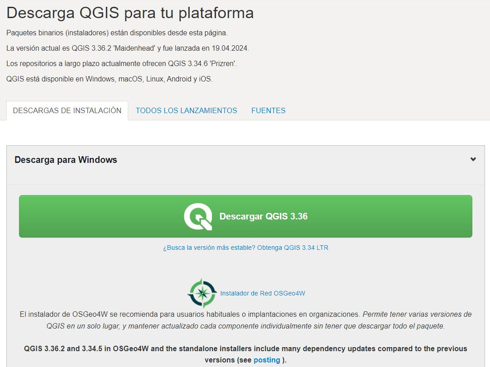
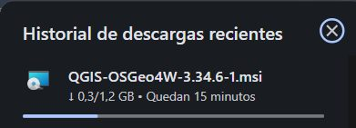
2. Abre el instalador y selecciona Next, acepta los términos de licencia y vuelve a seleccionar Next.
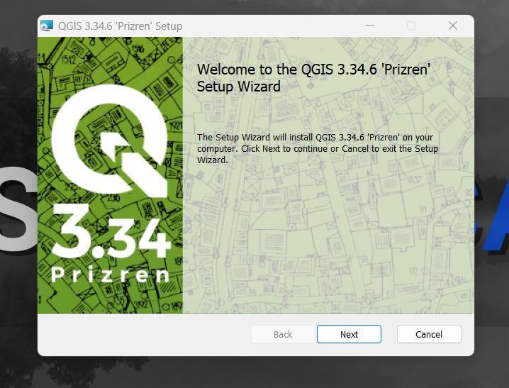
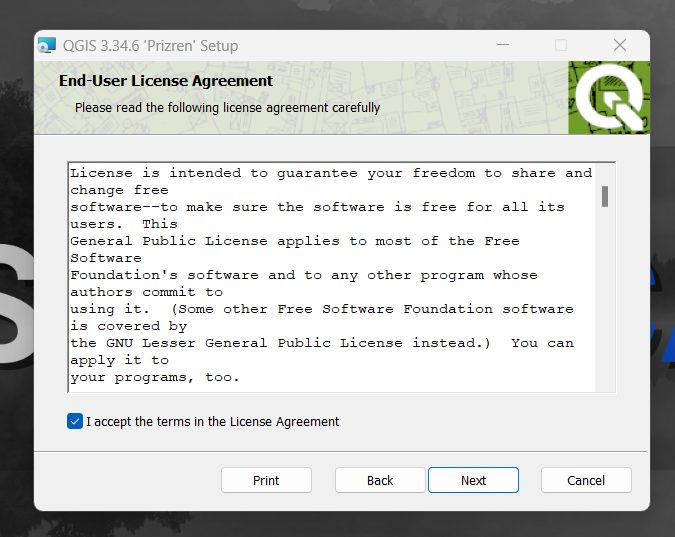
3. Elige la carpeta de instalación y marca las casillas Create a desktop shortcut y Create a start menu shortcut. Presiona Next y en la siguiente ventana selecciona Install.
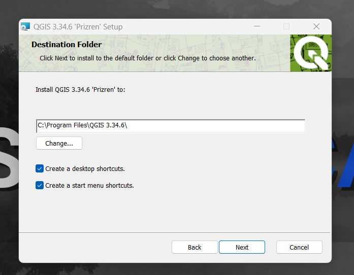
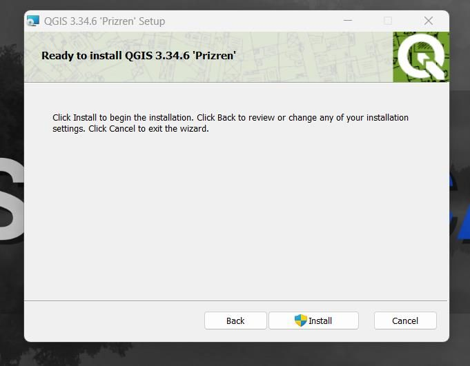
4. Cuando termine la instalación, selecciona Finish, abre la carpeta con los accesos directos y ejecuta QGIS Desktop 3.34. Ya puedes usar el programa en tus proyectos.
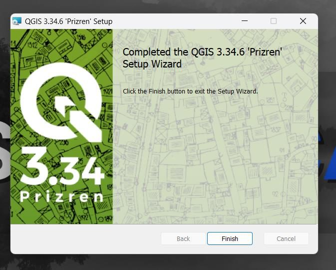
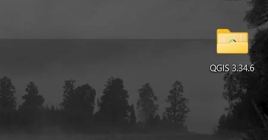
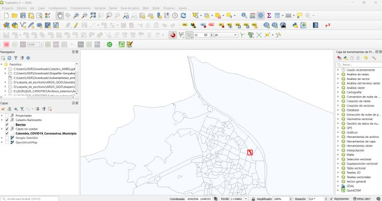
Descarga en macOS #
1. En la página de descarga de QGIS abre la sección para macOS y descarga el instalador de la versión LTR.
2. Sigue los pasos del instalador hasta que termine.
3. Al abrir QGIS por primera vez puede aparecer un aviso de que la app no se puede abrir porque Apple no puede verificarla.
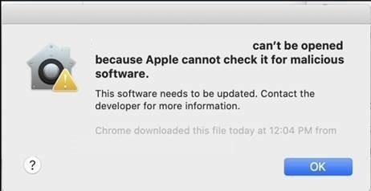
Para solucionarlo, entra a Configuración del sistema › Privacidad y seguridad (en versiones anteriores, Preferencias del sistema › Seguridad y privacidad › General), revisa que estén permitidas las apps de la App Store y de desarrolladores identificados, y elige Abrir de todas formas (Open Anyway).
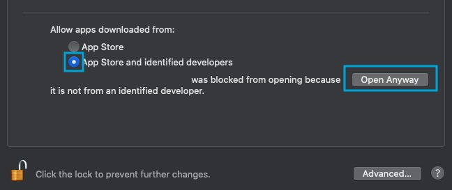
Si tuviste que desbloquear el candado para cambiar la configuración, vuelve a cerrarlo para proteger esa sección.
Descarga en Linux #
En la página de descarga de QGIS, la sección para Linux tiene las instrucciones de instalación para cada distribución, como Debian/Ubuntu, Fedora, openSUSE, RHEL, Arch Linux, Flatpak y más.
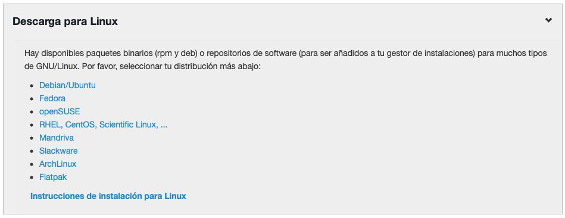
Conclusiones #
Con QGIS instalado ya tienes en tu computador una de las herramientas SIG más completas que existen. Ahora solo queda empezar a explorarla en tus proyectos de mapeo y análisis espacial.